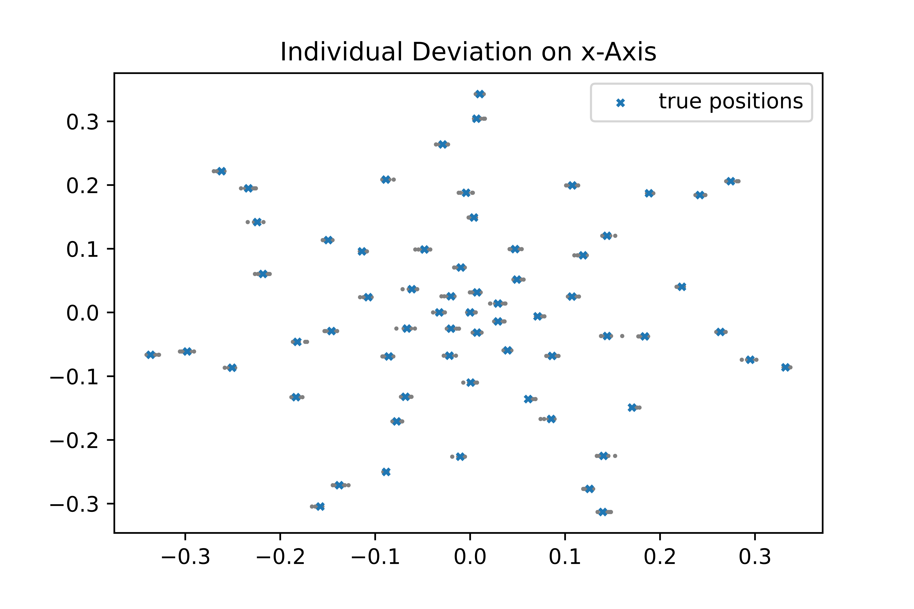
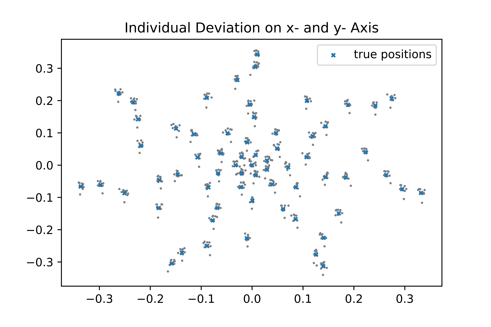
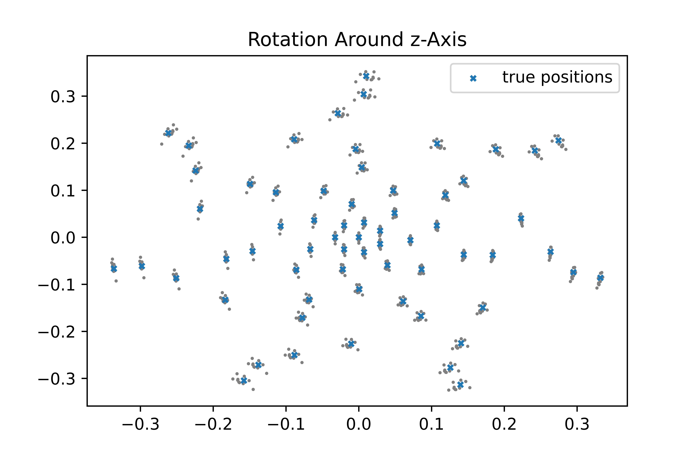
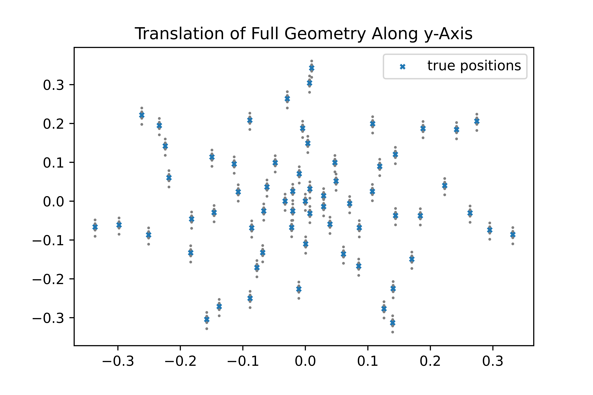

This example page will guide you through a brief introductory step-by-step example script and is intended to show some of the basic functionality of AcouPipe.
Prerequisites#
It is assumed that AcouPipe along with all its dependencies, as well as NumPy, SciPy and matplotlib are installed. Other than that, only a basic understanding of Python syntax is required.
Sampling Microphone Array Geometries#
One use case of AcouPipe is the sampling of a microphone array geometry. Sampling means that, for a given array geometry, a number of samples with slight perturbations in the microphone positions is generated. The purpose of AcouPipe is to generate large amounts of samples as quickly as possible, but for the sake of quick presentation, only a small number of samples is generated here.
First the necessary Python modules and objects are imported.
import numpy as np
import scipy
from numpy.random import RandomState
import matplotlib.pyplot as plt
from acoular import MicGeom
from acoupipe import MicGeomSampler
Then the number of samples to be generated is set,
nsamples = 10
the Acoular microphone array geometry object is initialised
mics = MicGeom(file="array64_d0o686.xml")
and a SciPy random distribution object is generated using a preset random seed in order to guarantee reproducibility.
rng = RandomState(seed=1)
normal_distribution = scipy.stats.norm(loc=0, scale= 0.004) #scale=0.04/3.)
Using the above definitions, the AcouPipe sampler object is instantiated.
mgs = MicGeomSampler(random_var=normal_distribution,
random_state=rng,
target=mics)
This is then used to manipulate microphone positions according to various patterns: Individual microphones are shifted along the x- and y-axis and the entire array is rotated, as well as shifted. In the sequel, these deviatations are calculated, as well as displayed using matplotlib.
To make individual microphone positions deviate along the x-axis only, the following code is used.
mgs.ddir = np.array([[1.],[0],[0]])
plt.figure()
plt.title("individual deviation on x-axis")
for _ in range(nsamples):
mgs.sample()
plt.scatter(mics.pos[0], mics.pos[1],marker="o",s=1,color="gray")
plt.scatter(mgs.pos_init[0], mgs.pos_init[1],marker='x',s=10,label="true positions")
plt.legend()
plt.show()
{kind=link}

Note that, once the AcouPipe Sampler object is instantiated, it suffices to set some of its attributes, notably the direction of deviation mgs.ddir and then simply call mgs.sample().
It is also possible to make individual microphone positions deviate along the x-axis, as well as the y-axis, as follows.
mgs.ddir = np.array([[1.],[0.5],[0]])
plt.figure()
plt.title("individual deviation on x- and y- axis")
for _ in range(nsamples):
mgs.sample()
plt.scatter(mics.pos[0], mics.pos[1],marker="o",s=1,color="gray")
plt.scatter(mgs.pos_init[0], mgs.pos_init[1],marker='x',s=10,label="true positions")
plt.legend()
plt.show()
{kind=link}

Rotating the entire array around the z-axis is done using the rotation vector attribute mgs.rvec.
mgs.ddir = np.array([[0.0],[0.0],[0.0]]) # no individual deviation
# for additional rotation around z-axis
mgs.rvec = np.array([[0], [0], [1]])
plt.figure()
plt.title("rotation around z-axis")
for _ in range(nsamples):
mgs.sample()
plt.scatter(mics.pos[0], mics.pos[1],marker="o",s=1,color="gray")
plt.scatter(mgs.pos_init[0], mgs.pos_init[1],marker='x',s=10,label="true positions")
plt.legend()
plt.show()
{kind=link}

Finally, the direction of translation attribute mgs.tdir can be set in order to translate the entire array. Here, it is shifted along the y-axis.
Note that the rotation vector attribute mgs.rvec needs to be set to zero again.
mgs.rvec = np.array([[0], [0], [0]])
mgs.tdir = np.array([[0], [2.], [0]])
plt.figure()
plt.title("translation of full geometry along y-axis")
for _ in range(nsamples):
mgs.sample()
plt.scatter(mics.pos[0], mics.pos[1],marker="o",s=1,color="gray")
plt.scatter(mgs.pos_init[0], mgs.pos_init[1],marker='x',s=10,label="true positions")
plt.legend()
plt.show()
{kind=link}

Generating samples with AcouPipe can be as simple as that. The etire script can be found at micgeom_sampling_example.py.